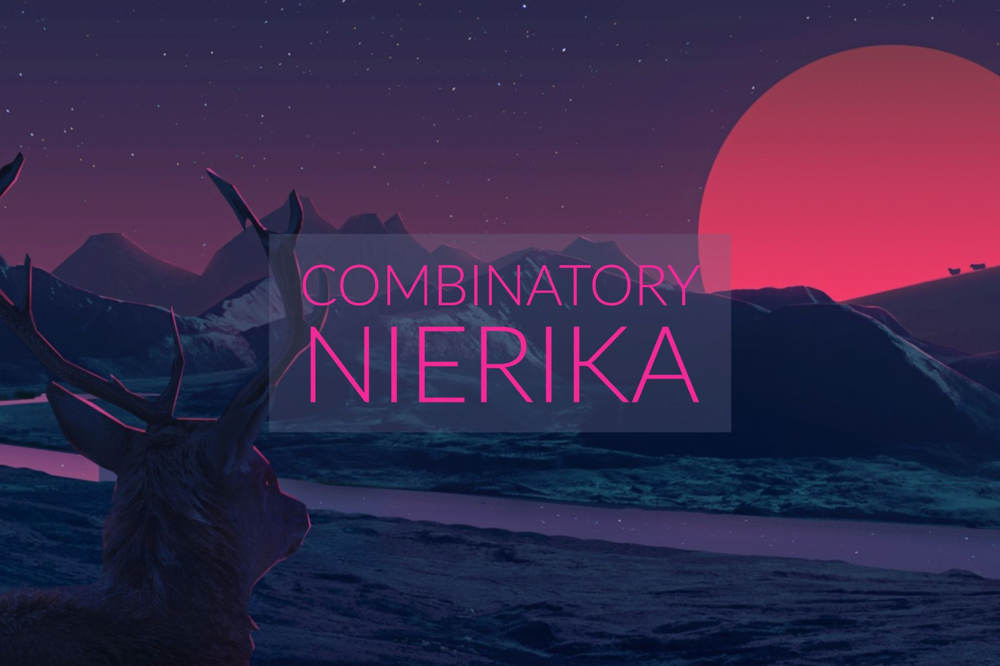
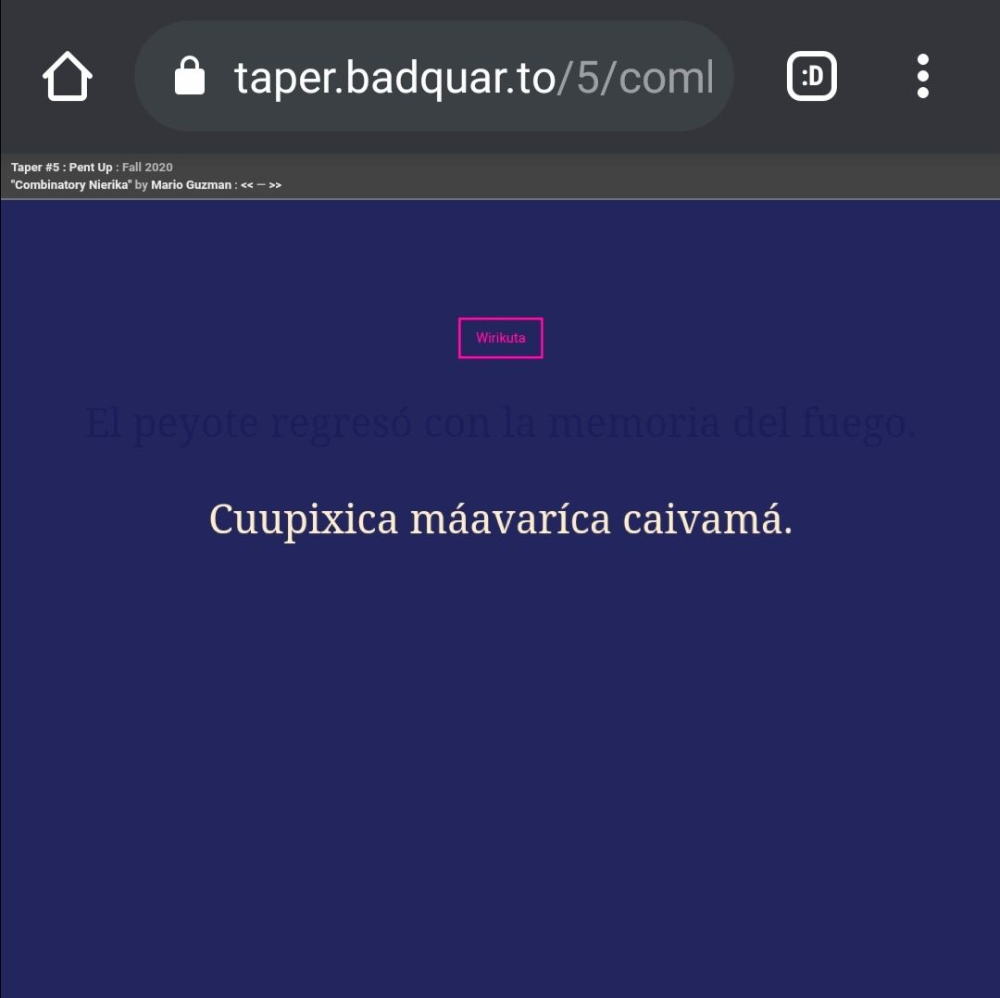
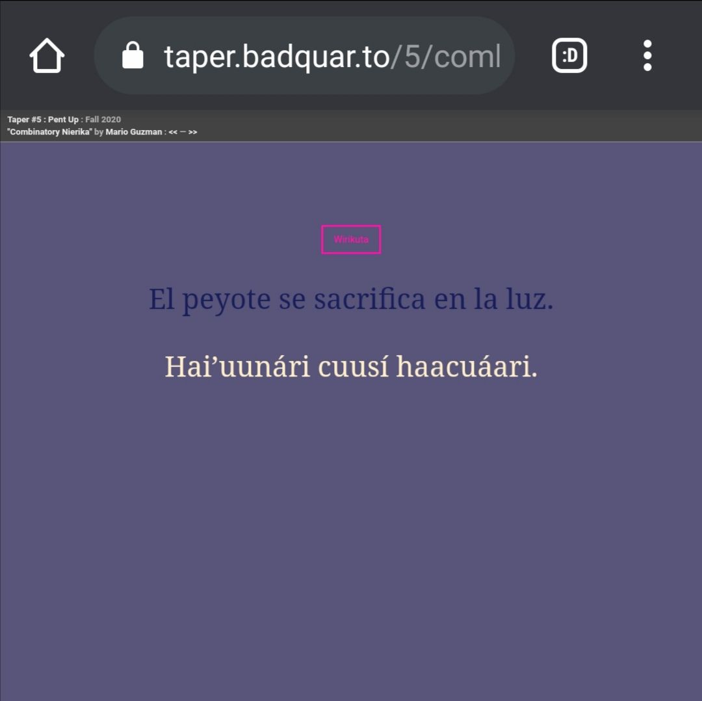
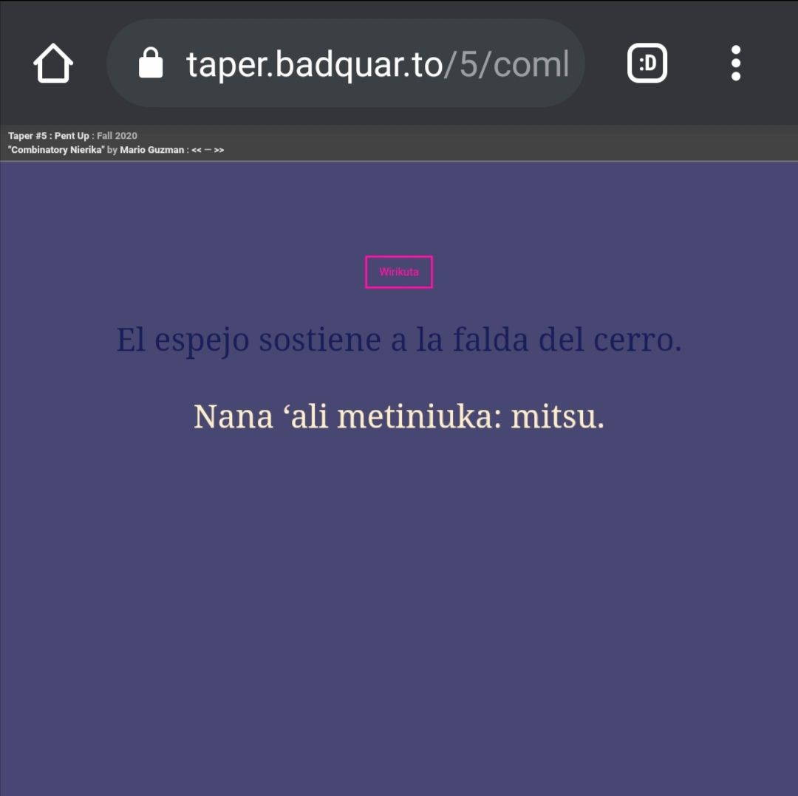

Combinatory Nierika

Following Taper's: Pent Up invitation to reflect on the significance of the number 5, the term "Nierika" relates to the quincunx structure, a geometric pattern consisting of four points forming a square and a fifth at its center. For the Huichols or Wixáritari, an indigenous culture located deep in the mountains of Mexico, it also represents a device crafted by their goddess mother to create the universe: a rhomboid embroidered with her hairs and two crossed arrows provided by her sons.
Nierika also means the "gift-of-seeing," an ability that shamans develop after practicing self-sacrifice, austerity, pilgrimage, fasting, and several other forms of vision searches.
One of the most important of these activities is the ritual travel to Wirikuta, where they recreate the search for the mythical deer that transformed its heart into a peyote, a cactus with psychoactive properties.
To become a shaman or a healer, an individual must participate in at least five pilgrimages to Wirikuta.
The work "Combinatory Nierika" reimagines, in Spanish and Wixárika, the multiple visions that the Wixáritari may encounter while performing their ritual pilgrimage from the coastlines of Nayarit to Wirikuta, the northern part of San Luis Potosí, where the ritual ends and the sun rises for the first time.
The background color performs a metaphorical passage from the ocean to the desert, and from day to night. By pressing the Wirikuta button, you can experience the minimalistic virtual pilgrimage's time on the scale of 24 hours or 24 seconds.


